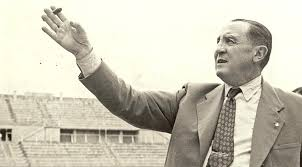

Santiago Bernabéu is considered to be the "man responsible for making Real Madrid a truly great club".
Timeline of Santiago Bernabéu's football career:
- 1895 - Bernabéu was born in Albacete, Spain
- 1909 - At the age of 14, Bernabéu joined Real Madrid's youth ranks
- 1911 - Bernabéu was promoted to the first team, officially launcing his senior career
- 10x Regional Competition Champion
- 1 Copa del Rey
- 1927 - After 15 years, Bernabéu retired from playing football and, in the same year, became Director of Football for the club
- 1933 - Bernabéu became Assitant Manager for the next three years
- 1943 - Bernabéu was appointed President of the club. He had the ardous task of rebuilding the club after the Spanish Civil War (football ceased to be played during the war)
- 16x Primera Division Champion
- 6 European Cups
- 6 Copa del Rey
- 1 International Cup
- 2 Latin Cups
- 1978 - After suffering from a cardiac arrest, Bernabéu passed away and his Presidency at Real Madrid ended
Honours:
Honours:
Please visit Real Madrid's page to learn more on Bernabéu's lasting legacy.